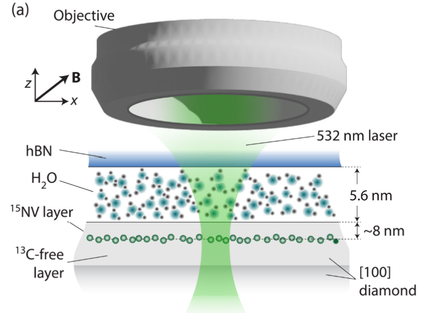

15. Slow Water in Engineered Nanochannels Revealed by Color-Center-Enabled Sensing

Daniela Pagliero, Rohma Khan, Kapila Elkaduwe, Ankit Bhardwaj, Kang Xu, Abraham Wolcott, Gustavo E. Lopez, Boya Radha, Nicolas Giovambattista, and Carlos A. Meriles [PDF]
Nano Letters 25, 9960-9966 (2025)
Nanoscale confinement of liquids can result in enhanced viscosity, local fluidic order, or collective motion. Studying these effects, however, is notoriously difficult, mainly due to the lack of experimental methods with the required sensitivity and spatial or time resolution. Here we leverage shallow nitrogen-vacancy (NV) centers in diamond to probe the dynamics of room-temperature water molecules entrapped within approximately 5 nm-tall channels formed between the diamond crystal and a suspended hexagonal boron nitride (hBN) flake. NV-enabled nuclear magnetic resonance measurements of confined water protons reveal a much reduced H2O self-diffusivity, orders of magnitude lower than that in bulk water. We posit the slow dynamics stem from the accumulation of photogenerated carriers at the interface and trapped fluid, a notion we support with the help of molecular dynamics modeling. Our results expose the importance of space charge fields in theories describing interfacial water and lay out a route for investigating other fluids under confinement.